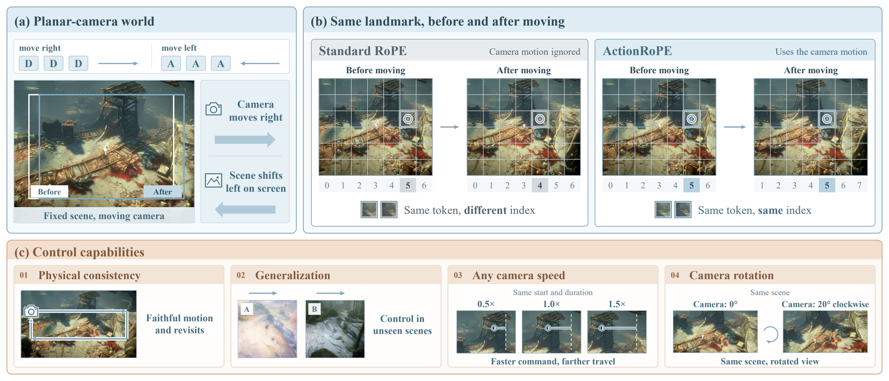
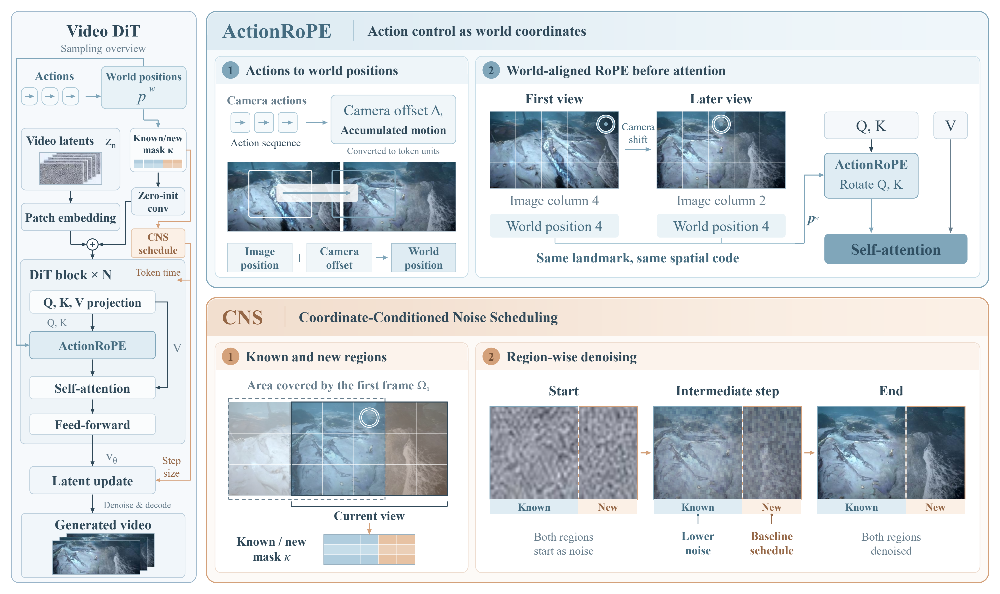
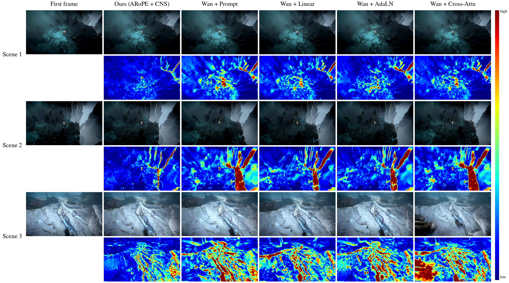
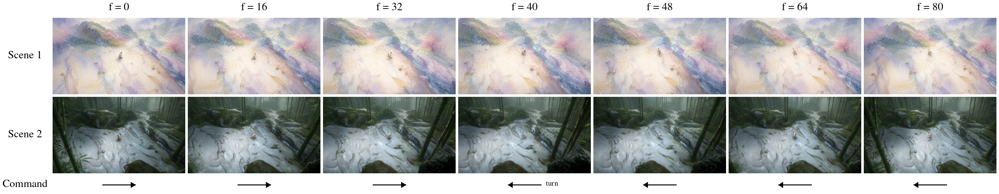
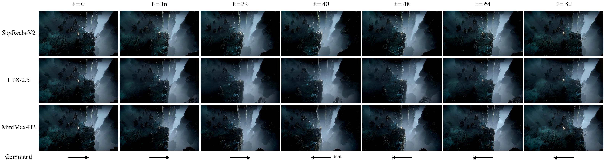

Figure 1. ActionRoPE writes the action-driven camera displacement into world-coordinate rotary positions, so tokens at the same world location share the same positional address across time. CNS then lowers the noise level of tokens whose world position was already observed in the first frame.
Game world models have made rapid progress toward real-time interactive generation. Yet action control is still predominantly implemented as feature conditioning, leaving the model to learn from training data how each action should move the visual world. This formulation is poorly matched to a broad class of planar-camera worlds, such as top-down and isometric games. In these worlds, player motion induces a geometrically well-defined planar camera displacement. We observe that the key to spatially consistent control in such worlds is to represent the effect of each action directly in world coordinates. To this end, we introduce ActionRoPE, a parameter-free action interface that converts action-driven camera displacement into world-coordinate rotary positions. As a result, tokens corresponding to the same world location retain the same positional address across time. These world coordinates further expose a spatial asymmetry in generation: regions covered by the initial observation are geometrically known, while newly revealed regions remain to be synthesized. We therefore propose Coordinate-Conditioned Noise Scheduling (CNS), which assigns token-wise denoising schedules according to this known–new structure. It allows observed regions to stabilize earlier, while new content is generated against an increasingly coherent world. Compared with four representative action-conditioning mechanisms on the same backbone, our approach follows the commanded motion more faithfully and reduces the revisit drift by 66% over the strongest baseline, without adding parameters to the control path. The same interface transfers across video backbones from 1.3B to 33B parameters and to out-of-distribution scenes.
ActionRoPE. In a planar-camera world every action moves the camera by a known displacement Δk. Instead of feeding the action as a feature, we shift the rotary position of every token of latent frame k by Δk/32 on the screen grid. A token that looks at the same place in the world therefore keeps the same positional address in every frame, and the first frame becomes the origin the whole clip is anchored to. Nothing is learned for the interface itself.
Known versus new. Once positions live in world coordinates, each token is either inside the footprint of the first frame (its content is known) or outside it (it has to be synthesised). This map κ is computed geometrically and is free.
CNS. Coordinate-conditioned noise scheduling gives known tokens a schedule that settles earlier while new tokens keep the standard one, so new content is generated against an increasingly coherent world. The same map is also passed to the network as a zero-initialised input channel (15K parameters, 3 ppm of the backbone) so the denoiser knows which tokens are anchors as well as when they settle.

Figure 2. Left: the action interface places each frame's tokens on the screen grid shifted by the accumulated displacement. Right: token-wise schedules for known and new regions.
Every model receives one validation first frame and an action sequence. Gain: walk right at 0.5×–1.5× speed, regress measured against commanded displacement. Direction: walk straight, measure the angle of the background flow. Revisit: walk out and return along the same path, compare the last frame with the first.
| Method | Params | slope | R² | angle ↓ | fail ↓ | PSNR ↑ | SSIM ↑ | NCC ↑ | DINO ↑ | drift ↓ |
|---|---|---|---|---|---|---|---|---|---|---|
| Prompt | 0 | 0.911 | −8.46 | 2.19 | 27 | 20.98 | 0.613 | 0.684 | 0.852 | 26.6 |
| Linear | +0.18M | 0.857 | 0.57 | 3.12 | 39 | 20.40 | 0.585 | 0.625 | 0.834 | 35.3 |
| AdaLN | +66.5M | 0.784 | −0.52 | 1.92 | 7 | 21.11 | 0.604 | 0.685 | 0.862 | 22.6 |
| Cross-Attn | +98.6M | 0.798 | −7.18 | 3.05 | 57 | 19.48 | 0.529 | 0.515 | 0.817 | 40.2 |
| ActionRoPE + CNS (ours) | 0† | 0.981 | 0.952 | 0.68 | 5 | 23.94 | 0.691 | 0.831 | 0.892 | 7.8 |
Table 1. Action injection mechanisms on a shared Wan2.2-TI2V-5B backbone (same data, recipe and seed; 982 validation first frames). slope / R²: measured against commanded displacement over five speed multipliers; angle: median direction error in degrees; fail: videos off by more than 15° or short of half the distance; PSNR / SSIM / NCC / DINO / drift: returned frame against the first frame after a walk-out-and-return loop. †No parameters on the control path; the optional known/new mask channel adds 0.015M.
| Backbone | Training | slope | R² | angle ↓ | PSNR ↑ | SSIM ↑ | NCC ↑ | DINO ↑ | drift ↓ |
|---|---|---|---|---|---|---|---|---|---|
| SkyReels-V2-DF · 1.3B | full | 1.047 | 0.919 | 1.46 | 22.40 | 0.648 | 0.757 | 0.858 | 15.3 |
| Wan2.2-TI2V · 5B | full | 0.981 | 0.952 | 0.68 | 23.94 | 0.691 | 0.831 | 0.892 | 7.8 |
| LTX-2.5 · 19B | LoRA | 1.014 | 0.845 | 0.59 | 23.55 | 0.717 | 0.810 | 0.800 | 12.8 |
| MiniMax-H3 · 33B‡ | LoRA | 1.082 | 0.861 | 1.90 | 21.97 | 0.647 | 0.726 | 0.831 | 22.0 |
Table 2. The full model (ActionRoPE + CNS) trained with one recipe on four video DiTs spanning 1.3B–33B parameters, evaluated on the same 982 first frames. ‡MiniMax-H3 only generates 17n+5 frames: the 81-frame action plan is time-compressed to 73 frames and the output resampled to 81 frames for measurement.
Same Wan2.2-5B backbone, same data, same recipe. Prompt, additive linear, AdaLN and cross-attention injection learn a mapping from action to motion; ActionRoPE writes it into the coordinates. In every row the first frame and the command are identical; the highlighted column is ours.

Figure 3. Closed-loop revisit. Top of each row: the returned frame; bottom: absolute error to the first frame (blue low, red high). Ours returns to a frame that differs from the origin only along thin structure edges; every learned mechanism leaves the world displaced or partially re-drawn.
Under each clip: cumulative background displacement measured from the video (solid) against the commanded trajectory (dashed), frame 0 to 80. A curve that stays on the dashed line follows the commanded speed and, on the return loops, comes back to the origin; the baselines drift off it. End error = distance between the measured and commanded position at the last frame.
Under each clip: cumulative background displacement measured from the video (solid) against the commanded trajectory (dashed), frame 0 to 80. A curve that stays on the dashed line follows the commanded speed and, on the return loops, comes back to the origin; the baselines drift off it. End error = distance between the measured and commanded position at the last frame.
Under each clip: cumulative background displacement measured from the video (solid) against the commanded trajectory (dashed), frame 0 to 80. A curve that stays on the dashed line follows the commanded speed and, on the return loops, comes back to the origin; the baselines drift off it. End error = distance between the measured and commanded position at the last frame.
Under each clip: cumulative background displacement measured from the video (solid) against the commanded trajectory (dashed), frame 0 to 80. A curve that stays on the dashed line follows the commanded speed and, on the return loops, comes back to the origin; the baselines drift off it. End error = distance between the measured and commanded position at the last frame.
Under each clip: cumulative background displacement measured from the video (solid) against the commanded trajectory (dashed), frame 0 to 80. A curve that stays on the dashed line follows the commanded speed and, on the return loops, comes back to the origin; the baselines drift off it. End error = distance between the measured and commanded position at the last frame.
First frames that never appear in training: paintings, ukiyo-e, a cyberpunk street, a market. The coordinate interface does not depend on scene content, so control and the return to the origin carry over.

Figure 4. Frames f = 0 … 80 of two unseen scenes under the same return loop; the arrows give the commanded direction at each frame.
ActionRoPE + CNS trained with the same recipe on SkyReels-V2 (1.3B, diffusion forcing), LTX-2.5 (19B, LoRA), MiniMax-H3 (33B, LoRA) and Wan2.2 (5B, full fine-tuning). Same first frame and command in every row.

Figure 5. Frames f = 0 … 80 of one return loop on three backbones.